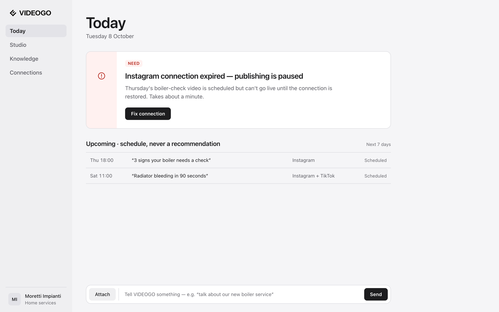
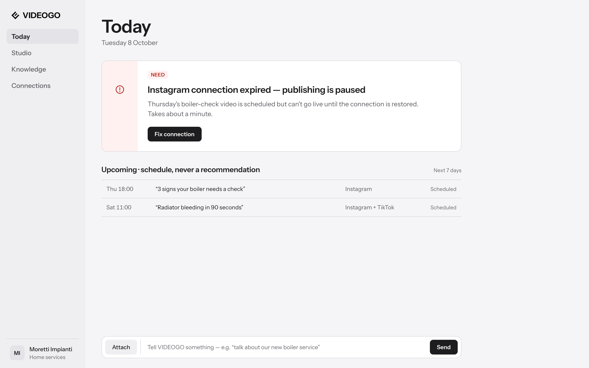
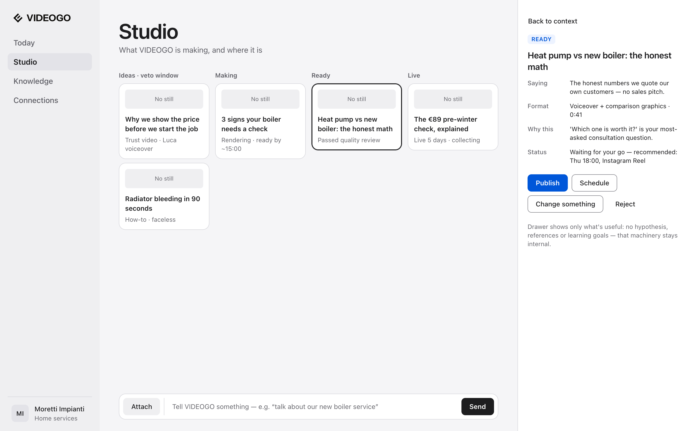
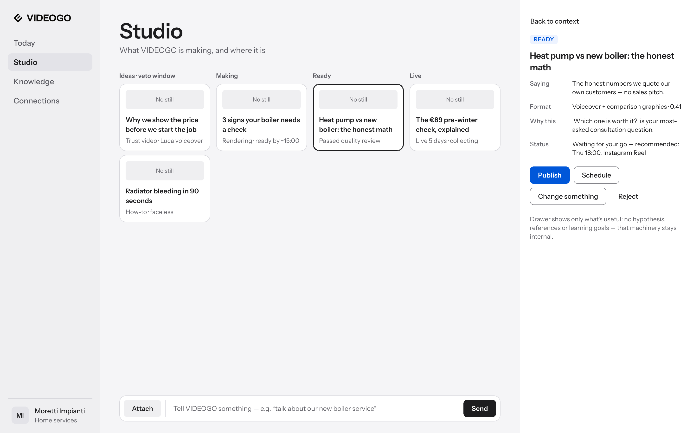
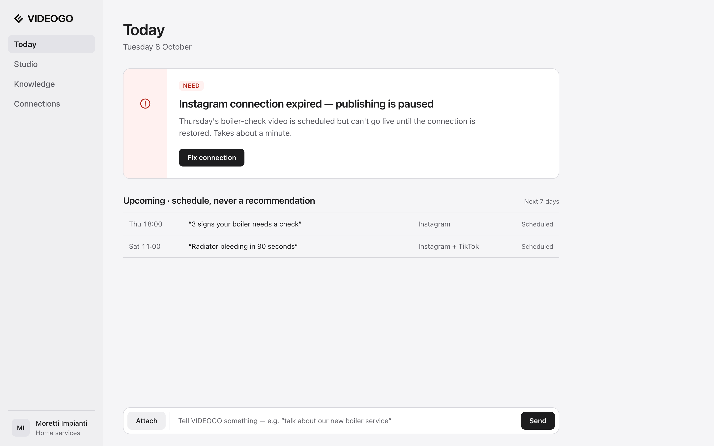
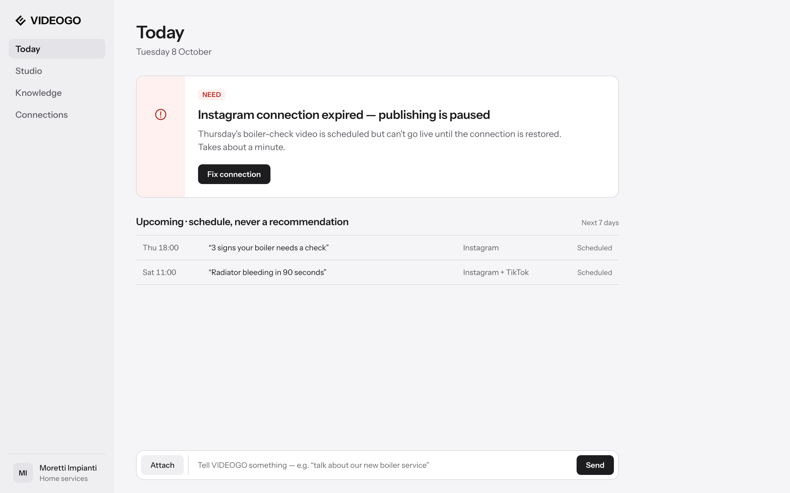

Options for review. Each comparison changes one variable and names what is held constant. No option is recommended on this board. Content: frozen fixtures 04_today_need and B2/B2b (source strings restored where annotation status is unconfirmed). Rendered in Google Chrome 152.0.7977.84, macOS, 1440×900, device scale 2.
Status: not approved
A · Today at 1440px — font family
Variable: font family. Held: content, spacing, colour, composition, page title 44/48 · weight 600 · −0.02em.
Option A1 · system-ui (San Francisco)system-ui → San Francisco (macOS platform font) · title 44/48Rendered: .SF NS [platform font] · title computed 44px/48px · 600 · -0.88px · 1440×900

Option A2 · Instrument SansInstrument Sans · official OFL variable font (google/fonts) · true weights 400, 500, 600, 700 verified · synthesis off · title 44/48Rendered: Instrument Sans [loaded font file] · title computed 44px/48px · 600 · -0.88px · 1440×900

B · Studio at 1440px — font family
Variable: font family. Held: content, density, colour, composition, READY card selected with detail panel open, page title 44/48 · 600 · −0.02em.
Option B1 · system-ui (San Francisco)system-ui → San Francisco (macOS platform font) · title 44/48Rendered: .SF NS [platform font] · title computed 44px/48px · 600 · -0.88px · 1440×900

Option B2 · Instrument SansInstrument Sans · official OFL variable font (google/fonts) · true weights 400, 500, 600, 700 verified · synthesis off · title 44/48Rendered: Instrument Sans [loaded font file] · title computed 44px/48px · 600 · -0.88px · 1440×900

C · Page title — 32/38 versus 44/48
Variable: page-title size and line height. Held: weight 600, tracking −0.02em, identical Today composition. The font is not yet selected, so the pair is shown once per font option; compare within a row only.
C1 · with system-ui (San Francisco)
Option C1-a · title 32/38 (v0.1 token)system-ui → San Francisco (macOS platform font)Rendered: .SF NS [platform font] · title computed 32px/38px · 600 · -0.64px · 1440×900

Option C1-b · title 44/48 (proposed)system-ui → San Francisco (macOS platform font)Rendered: .SF NS [platform font] · title computed 44px/48px · 600 · -0.88px · 1440×900
C2 · with Instrument Sans
Option C2-a · title 32/38 (v0.1 token)Instrument Sans · official OFL variable font (google/fonts) · true weights 400, 500, 600, 700 verified · synthesis offRendered: Instrument Sans [loaded font file] · title computed 32px/38px · 600 · -0.64px · 1440×900

Option C2-b · title 44/48 (proposed)Instrument Sans · official OFL variable font (google/fonts) · true weights 400, 500, 600, 700 verified · synthesis offRendered: Instrument Sans [loaded font file] · title computed 44px/48px · 600 · -0.88px · 1440×900
D · Detail crops
All crops use system-ui (San Francisco). Small crops are shown at 200% for inspection.
D1 · NEED treatment — variable: alert icon. Held: leading zone, NEED marker, title, consequence, action. Shown at 200%.